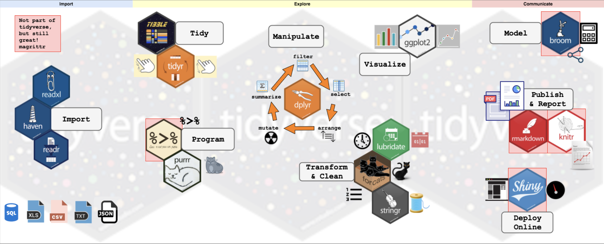

É preferivel ter assistido a aula de primeiro uso do R: https://www.youtube.com/watch?v=fwL38d8mtqE
Material base: https://r4ds.hadley.nz/

Vamos utilizar mais os pacotes dplyr e ggplot2
O dplyr é utilizado para manipulação de dados
tibble [1,704 × 6] (S3: tbl_df/tbl/data.frame)
$ country : Factor w/ 142 levels "Afghanistan",..: 1 1 1 1 1 1 1 1 1 1 ...
$ continent: Factor w/ 5 levels "Africa","Americas",..: 3 3 3 3 3 3 3 3 3 3 ...
$ year : int [1:1704] 1952 1957 1962 1967 1972 1977 1982 1987 1992 1997 ...
$ lifeExp : num [1:1704] 28.8 30.3 32 34 36.1 ...
$ pop : int [1:1704] 8425333 9240934 10267083 11537966 13079460 14880372 12881816 13867957 16317921 22227415 ...
$ gdpPercap: num [1:1704] 779 821 853 836 740 ...# A tibble: 3 × 6
country continent year lifeExp pop gdpPercap
<fct> <fct> <int> <dbl> <int> <dbl>
1 Afghanistan Asia 1952 28.8 8425333 779.
2 Afghanistan Asia 1957 30.3 9240934 821.
3 Afghanistan Asia 1962 32.0 10267083 853. country continent year lifeExp
Afghanistan: 12 Africa :624 Min. :1952 Min. :23.60
Albania : 12 Americas:300 1st Qu.:1966 1st Qu.:48.20
Algeria : 12 Asia :396 Median :1980 Median :60.71
Angola : 12 Europe :360 Mean :1980 Mean :59.47
Argentina : 12 Oceania : 24 3rd Qu.:1993 3rd Qu.:70.85
Australia : 12 Max. :2007 Max. :82.60
(Other) :1632
pop gdpPercap
Min. :6.001e+04 Min. : 241.2
1st Qu.:2.794e+06 1st Qu.: 1202.1
Median :7.024e+06 Median : 3531.8
Mean :2.960e+07 Mean : 7215.3
3rd Qu.:1.959e+07 3rd Qu.: 9325.5
Max. :1.319e+09 Max. :113523.1
gm <- gapminder #Salvar no ambiente de trabalho
gm <- gm %>%
rename(
pais = country,
continente = continent,
ano = year,
expectativa_vida = lifeExp,
populacao = pop,
pib_per_capita = gdpPercap
)
head(gm, 5)# A tibble: 5 × 6
pais continente ano expectativa_vida populacao pib_per_capita
<fct> <fct> <int> <dbl> <int> <dbl>
1 Afghanistan Asia 1952 28.8 8425333 779.
2 Afghanistan Asia 1957 30.3 9240934 821.
3 Afghanistan Asia 1962 32.0 10267083 853.
4 Afghanistan Asia 1967 34.0 11537966 836.
5 Afghanistan Asia 1972 36.1 13079460 740.gapminder_unique <- gm %>%
summarise(total = n_distinct(pais)) %>%
pull(total)
tabela <- gm %>%
group_by(continente) %>%
summarise(
Freq.abs = n(),
Freq.rel = n_distinct(pais)/gapminder_unique
) %>%
mutate (Freq.rel = scales::percent(Freq.rel))
tabela# A tibble: 5 × 3
continente Freq.abs Freq.rel
<fct> <int> <chr>
1 Africa 624 36.6%
2 Americas 300 17.6%
3 Asia 396 23.2%
4 Europe 360 21.1%
5 Oceania 24 1.4% library(kableExtra)
# Formatando a tabela com kable e kableExtra
tabela %>%
kable(
format = "html", # Formato HTML para slides no Quarto
col.names = c("Continente", "Frequência Absoluta", "Frequência Relativa"), # Títulos das colunas
caption = "Distribuição de Países por Continente", # Título da Tabela
align = "c" # Alinhamento centralizado
) %>%
kable_styling(
bootstrap_options = c("striped", "hover"), # Opções de estilo
full_width = FALSE, # Remover bordas laterais
position = "center" # Centralizar tabela na página
) | Continente | Frequência Absoluta | Frequência Relativa |
|---|---|---|
| Africa | 624 | 36.6% |
| Americas | 300 | 17.6% |
| Asia | 396 | 23.2% |
| Europe | 360 | 21.1% |
| Oceania | 24 | 1.4% |
dados_2007 <- gm %>% #filtrar exato
filter(ano == 2007)
asia_europa <- gm %>% #filtrar usando "ou"
filter(continente == "Asia" | continente == "Europe")
africa_asia_europa <- gm %>% #filtrar por multiplas condições
filter(continente %in% c("Africa", "Asia", "Europe"))
vida_70_80 <- gm %>% #por regra lógica
filter(expectativa_vida >= 70, expectativa_vida <= 80)
paises_ia <- gm %>% # Filtrar países que contêm "ia"
filter(str_detect(pais, "ia"))dados_selecionados <- gm %>% # Selecionar colunas específicas
select(pais, continente, expectativa_vida)
dados_intervalo <- gm %>% # Selecionar um intervalo de colunas
select(pais:expectativa_vida)
dados_excluindo <- gm %>% # Excluir uma coluna específica
select(-pib_per_capita)
dados_inicio_p <- gm %>% # Selecionar colunas que começam com "p"
select(starts_with("p"))
dados_fim_cap <- gm %>% # Selecionar colunas que terminam com "cap"
select(ends_with("cap"))
dados_vida <- gm %>% # Selecionar colunas que contêm "vida"
select(contains("vida"))
dados_primeiras <- gm %>% # Selecionar as duas primeiras colunas
select(1:2)
dados_com_p <- gm %>% # Selecionar colunas com "p" no nome
select(matches("p"))
dados_renomeados <- gm %>% # Selecionar e renomear colunas
select(pais, pop_milhares = populacao)# 1. Média da Expectativa de Vida e População para Países da Ámerica em 2007
america2007 <- gm %>%
filter(continente == "Americas", ano == 2007) %>%
select(pais, expectativa_vida, populacao) %>%
group_by(pais) %>%
summarise(
expectativa_vida_media = mean(expectativa_vida, na.rm = TRUE),
populacao_media = mean(populacao, na.rm = TRUE))
head(america2007)# A tibble: 6 × 3
pais expectativa_vida_media populacao_media
<fct> <dbl> <dbl>
1 Argentina 75.3 40301927
2 Bolivia 65.6 9119152
3 Brazil 72.4 190010647
4 Canada 80.7 33390141
5 Chile 78.6 16284741
6 Colombia 72.9 44227550# 2. Expectativa de Vida Média por Continente, Apenas para Países com População > 2 Milhões
ev2m <- gm %>%
filter(populacao > 2000000) %>%
select(continente, expectativa_vida) %>%
group_by(continente) %>%
summarise(expectativa_vida_media = mean(expectativa_vida, na.rm = TRUE))
ev2m# A tibble: 5 × 2
continente expectativa_vida_media
<fct> <dbl>
1 Africa 48.2
2 Americas 65.1
3 Asia 60.2
4 Europe 72.0
5 Oceania 74.5evpc <- gm %>%
group_by(continente) %>%
summarise(
Media = mean(expectativa_vida, na.rm = TRUE),
Mediana = median(expectativa_vida, na.rm = TRUE),
sd = sd(expectativa_vida, na.rm = TRUE),
CV = (sd / Media) * 100)
kable(evpc, digits = 2)| continente | Media | Mediana | sd | CV |
|---|---|---|---|---|
| Africa | 48.87 | 47.79 | 9.15 | 18.73 |
| Americas | 64.66 | 67.05 | 9.35 | 14.45 |
| Asia | 60.06 | 61.79 | 11.86 | 19.75 |
| Europe | 71.90 | 72.24 | 5.43 | 7.56 |
| Oceania | 74.33 | 73.66 | 3.80 | 5.11 |
gm_modificado <- gm %>%
mutate(populacao_milhoes = populacao / 1e6, # Converte população para milhões
expectativa_vida_anos = round(expectativa_vida, 0), # Arredonda expectativa de vida para o inteiro mais próximo
crescimento_populacional = (populacao - lag(populacao)) / lag(populacao) * 100, # Calcula a taxa de crescimento populacional percentual ano a ano
continente_fator = as.factor(continente), # Converte a variável "continente" para fator
expectativa_vida_log = log(expectativa_vida), # Aplica o logaritmo à expectativa de vida
populacao_padronizada = (populacao - mean(populacao, na.rm = TRUE)) / sd(populacao, na.rm = TRUE) # Padroniza a população (z-score)
)
head(gm_modificado [ ,7:12], 5)# A tibble: 5 × 6
populacao_milhoes expectativa_vida_anos crescimento_populacional
<dbl> <dbl> <dbl>
1 8.43 29 NA
2 9.24 30 9.68
3 10.3 32 11.1
4 11.5 34 12.4
5 13.1 36 13.4
# ℹ 3 more variables: continente_fator <fct>, expectativa_vida_log <dbl>,
# populacao_padronizada <dbl># Calcular média e desvio padrão da expectativa de vida
media_vida <- mean(gm$expectativa_vida, na.rm = TRUE)
desvio_vida <- sd(gm$expectativa_vida, na.rm = TRUE)
ch3 <- ggplot(gm, aes(x = expectativa_vida)) +
geom_histogram(aes(y = ..density..), bins = 30, color = "black", fill = "skyblue") +
stat_function(fun = dnorm, args = list(mean = media_vida, sd = desvio_vida), color = "red", size = 1) + # Curva normal sobreposta
labs(title = "Distribuição da Expectativa de Vida",
x = "Expectativa de Vida", y = "Densidade") +
theme_minimal()ch5 <- ggplot(gm, aes(x = continente, y = expectativa_vida)) +
geom_violin(trim = FALSE, fill = "skyblue", color = "black") + # Violino com distribuição completa
geom_boxplot(width = 0.1, outlier.colour = "red", outlier.shape = 16, outlier.size = 2) + # Box-plot dentro do violino
labs(
title = "Distribuição da Expectativa de Vida por Continente",
x = "Continente",
y = "Expectativa de Vida"
) +
theme_minimal()# Filtrar dados do Brasil e calcular o crescimento populacional
crescimento_populacional <- gm %>%
filter(pais == "Brazil") %>%
arrange(ano) %>%
mutate(crescimento = (populacao - lag(populacao)) / lag(populacao) * 100) %>% # Cálculo da taxa de crescimento
group_by(ano) %>%
summarise(crescimento_medio = mean(crescimento, na.rm = TRUE)) # Média do crescimento para cada ano
# Criar o gráfico de linhas
ch6 <- ggplot(crescimento_populacional, aes(x = ano, y = crescimento_medio)) +
geom_line(color = "blue", size = 1) + # Linha do gráfico
geom_point(color = "red", size = 2) + # Pontos para destacar cada ano
labs(title = "Média de Crescimento Populacional do Brasil ao Longo dos Anos",x = "Ano",y = "Crescimento Populacional Médio (%)") +
theme_minimal()populacao_continente <- gm %>%
filter(ano == "2007") %>%
mutate(populacao_milhoes = populacao / 1e6) %>%
group_by(continente) %>%
summarise(populacao_total_milhoes = sum(populacao_milhoes, na.rm = TRUE)) # Soma da população em milhões por continente
ch7 <- ggplot(populacao_continente, aes(x = continente, y = populacao_total_milhoes, fill = continente)) +
geom_bar(stat = "identity") +
labs(title = "População Total em Milhões por Continente",
x = "Continente",
y = "População Total (Milhões)") +
theme_minimal() +
theme(legend.position = "none") # Remover legenda (já que as cores representam os continentes)